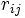
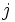
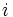
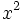
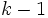

Die Vorgehensweise unten basiert auf NAG-Algorithmen.
Die Scores in jeder Spalte sind nach Rang sortiert, wobei  den Rang innerhalb des Blocks  der Beobachtung in der Behandlung  bezeichnet. Die durchschnittlichen Ränge werden zugeordnet, um die Werte zu verbinden.
Das Signifikanzniveau wird mit der -Verteilung mit  Freiheitsgraden verglichen, wobei k die Gesamtanzahl der Stichproben ist.
Weitere Einzelheiten zu dem Algorithmus finden Sie unter nag_friedman_test (g08aec).